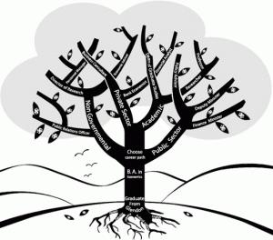
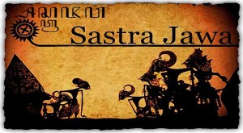

Seputar
MahasiswaYogyakarta
Jurusan yang Kurang di Minati
1. Jurusan Kearsipan

Jurusan ini mempelajari ilmu kearsipan dokumen di kantor-kantor dan di daerah.
Meski jarang peminatnya, tapi kalau ada pembukaan CPNS (Calon Pegawai Negeri Sipil) lulusan jurusan ini selalu dibutuhkan dan
pasti pendaftarnya masih jarang, jadi kemungkinan besar dong diterimanya dibanding formasi lain.
2. Jurusan Astronomi

Hmm, mungkin jurusan ini terkesan complicated ya? Yuppp, ilmu Astromoni merupakan Ilmu eksak tertua yang banyak mendapatkan perhatian
manusia sepanjang zaman. Jika kalian kuliah di jurusan ini, kalian akan mempelajari benda-benda langit seperti bumi, bulan, matahari,
bintang dan seluruh alam semesta, jurusan ini juga mempelajari ilmu fisika dan matematika. Jadi bagi kalian yang tertarik dengan hal-hal
berbau luar angkasa dan senang bergelut dengan angka, tidak salah jika kalian memilih jurusan ini. Jurusan ini sangat menjanjikan kedepannya,
karena peminatnya sedikit namun lowongan yang dibutuhkan pasti selalu ada. Setelah lulus kalian bisa bekerja di lembaga-lembaga penelitian
sebagai staf ahli seperti di Lembaga Penerbangan dan Antariksa Nasiona l(LAPAN),Lembaga Ilmu Pengetahuan Indonesia (LIPI),
Observatorium Boscha,Badan Metereologi Klimatologi dan Geofisika (BMKG) dan lembaga penelitian lainnya. Seru kan?
3. Seni Peran
Buat kalian yang suka berakting tidak ada salahnya untuk mengembangkan bakat kalian dengan mengambil jurusan seni peran atau teater.
Lulus dari jurusan ini, bukan berarti kamu hanya bisa jadi artis. Kamu juga bisa belajar hal apapun yang berkaitan dengan seni peran, seperti
riasan wajah, penulis naskah, men-direct para pemain. Sayangnya, mungkin bagi sebagian orang jurusan ini kurang diminati karena larangan orang
tua atau anggapan banyak orang “mau jadi apa setelah lulus ?” Namun jangan takut dengan anggapan seperti itu ya. Setelah lulus dari jurusan
seni peran banyak sekali karier di dunia hiburan yang cukup menjanjikan seperti menjadi pemain teather,pemain film, pemain sinetron, penulis
drama atau naskah dan lainnya.
4. Jurusan Fisioterapi
Untuk Fakultas atau jurusan ilmu kesehatan sendiri yang sudah sangat familiar di telinga masyarakat indonesia adalah kedokteran,
keperawatan, kebidanan, apoteker dan kesehatan masyarakat. Padahal masih banyak program studi ilmu kesehatan lainnya seperti fisioterapi.
Fisioterapi merupakan profesi di bidang kesehatan. Menempuh pendidikan resmi selama 3 tahun untuk Diploma
Fisioterapi dan 4 tahun (atau lebih) untuk gelar sarjana sains terapan Fisioterapi. Seseorang yang lulus dari akademi/fakultas
fisioterapi akan menyandang gelar profesi Fisioterapis dan mempunyai kewenangan untuk melakukan aktifitas atau pekerjaan di bidang Fisioterapi.
Peluang kerjadalam bidang ini juga cukup besar dan kamu juga bisa buka praktek sendiri atau pun bekerja di rumah sakit dan klinik di kotamu.
5. Jurusan Pengelasan
Salah satu jurusan yang berada di bidang permesinan adalah teknik las, dimana jurusan ini mempelajari satu bidang kerja saja yaitu
bagaimana cara untuk mengelas yang baik, dan teori tentang apa – apa saja bahan untuk proses pengelasan. Katanya jurusan ini memiliki
prospek yang lumayan menjanjikan lho, karena tidak sedikit industri yang mensiagakan para pekerja di bidang engginering untuk menjaga
kecakapan mesin – mesin yang ada di perusahaan, salah satu yang dibutuhkan adalah teknik las. Jurusan ini mempelajari teknik-teknik
pengelasan, jangan dibandingkan dengan pengelas pinggir jalan atau keliling, ya. Yang pasti lulusan teknik las jauh di atas mereka.
Lulusan jurusan ini sudah mempelajari mulai dari bidang las otomotif sampai bangunan lepas pantai.
6. Jurusan Sastra Nusantara
Entah mengapa, jurusan satra bahasa nusantara jarang diminati oleh calon mahasiswa baru.
Mereka lebih banyak memilih jurusan bahasa asing. Padahal, lulusan jurusan ini bisa bekerja di institusi pendidikan,
pusat pengembangan dan penelitian, dan media massa.
7. Jurusan Filsafat

Filsafat,banyak yang berfikir jika ilmu ini cenderung membosankan, tapi hasil yang kalian dapatkan tidak akan membuat kalian mnyesesal
setelah masuk ke jurusan ini. Dilansir dari wikipedia filsafat adalah studi tentang seluruh fenomena kehidupan dan pemikiran manusia secara
kritis dan dijabarkan dalam konsep mendasar. Namun banyak orang tua yang takut kalau anaknya belajar ilmu ini akan merusak keimanan dan
kepercayaan pada Tuhan.Namun semua tergantung iman kita ya guys !
Lulusan filsafat dididik untuk melihat suatu permasalahan dari berbagai sudut pandang, ini sangat penting untuk memecahkan dan
pencerah pikiran pada lapangan kerja. Kedua, lulusan filsafat dapat dikatakan manusia yang dituntut untuk “bodoh” sekaligus “sempurna”.
Maksudnya bodoh karena mereka harus terus bertanya dan mengamati dengan hening segala keadaan. Sempurna karena hasil kontemplasi
mereka atas keadaan di atas dapat menjadi rekomendasi bagi kebaikan suatu instansi.
8. Jurusan Manajemen Transportasi
Selama manusia sering berpindah-pindah, selama masih ada mobil, kapal dan pesawat maka lulusan manajemen transportasi masih dibutuhin.
Karena di jurusan manajemen transportasi kalian bakal belajar manajemen lalu lintas kendaraan baik itu darat, laut ataupun udara serta
barang-barang niaga. Nah, kalo prospek kerjanya sangat terbuka lebar nih. Kalian bisa kerja Dephub alias Departemen Perhubungan,
nanti kalo di darat ya jadi DLLAJ (Dinas Lalu Lintas dan Angkutan Jalan), kalo di Udara ya kerja di Angkasa Pura atau Gapura Angkasa,
kalau Laut kerjanya di Pelabuhan sebagai pengawas lalu lintas pelabuhan. Jelas kan ? Nggak ada yang perlu diraguin lagi dong.
9. Sastra Jawa

Nah ini jurusan memang beum tentu ada disetiap Universitas. Jangan underestimate dulu deh sama jurusan yang satu ini.
Jurusan ini menarik banget lho. Kalau kalian tertarik pada Jawa (Budaya dan Bahasa) di sini adalah surganya.
Kalian bisa belajar mendalang, main gamelan, tari tradisional, Mata kuliahnya juga seru-seru. Bukan cuma bahasa, kamu juga bisa belajar
budaya daerah yang seru-seru mulai dari musik, pakaian, makanan, dll. Pokoknya sangat macem-macem deh. Terus, kalo udah lulus kamu bisa kerja
di balai bahasa, bisa juga kerja di museum, bisa juga jadi guru, kerja di penerbitan dan percetakan, bisa jadi seniman yang bisa membantu
budaya Jawa kan? Atau paling apesnya kalian bisa jadi instruktur bahasa Jawa di tempat-tempat kursus bahasa. Mencintai budaya lokal tu nggak
salah lho.
10. Jurusan Radiologi
Jurusan Radiologi salah satu cabang dari ilmu kesehatan. Jurusan ini belajar ilmu radiologi yang meliputi radiodiagnotik,
radioterapi, kedokteran nuklir, USG (Ultrasonografi), dan MRI (Magnetik Resonance Imaging). Kamu bisa membaca hasil rontgen yang nggak
hanya orang-orang tertentu yang bisa baca. Setelah lulus, kamu bisa bekerja di rumah sakit. Masa depan yang terjamin nih. Kece kan?
11. Jurusan Kehutanan
Pasti dalam benak kalian mau jadi apa lulusan kehutanan ? Jangan sampe ya kamu mikir lulus bakal jadi penjaga hutan atau tarzan, xixii.
Yah memang jurusan ini nggak seterkenal fakultas pertanian ya. Eitss masih inget kan Presiden Indonesia sekarang ?
Yuhuu Bp. Jokowi, beliau lulusan Kehutanan UGM. Sekali lagi, mau jadi apa kuliah di kehutanan? Jadi pengusaha mebel seperti Jokowi
boleh juga kan? Hehe. Kalo kamu memang suka tentang sesuatu yang berhubungan dengan hutan (tumbuh-tumbuhan dan segala isi-isinya),
dan sangat peduli pada kelestariannya, fakultas ini sangat cocok buat kamu. Jurusan pada fakultas ini ada Budidaya Hutan, Manajemen Hutan,
Konservasi Sumber Daya Hutan, dan Teknologi Hasil Hutan. Keren kan kerjanya masuk keluar hutan buat penelitian. Kamu juga bakal dibekali
ilmu tentang sumber daya alam yang penting dan dicari oleh perusahaan yang bisnisnya kelola SDA.
12. Jurusan Ilmu Perpustakaan

Di beberapa universitas, jurusan ilmu perpustakaan ini masuk ke fakultas ilmu budaya (FIB) atau fakultas ilmu sosial dan politik (FISIP).
Jangan ngebayangin ya jurusan ini berkutat dengan buku yang membosankan dan identik dengan mahasiswa cupu berkacamata.
Ilmu Perpustakaan saat ini adalah salah satu jurusan paling eksis. Mata kuliah yang diajarkan juga berkaitan banyak tentang hukum,
matematika, sosiologi, bahkan filsafat ini dikarena lulusan Ilmu Perpustakaan dituntut memiliki wawasan yang sangat luas.
Jurusan ini juga dituntut mampu mengelola informasi yang berbasis teknologi sehingga mempelajari pemrograman dan web desain. Jadi,
buang jauh-jauh pikiran kamu tentang perpustakaan yang membosankan. Lulusan ilmu perpustakaanpun memiliki prospek kerja cukup luas
mulai jadi programmer, sekretaris sampai document controller di perusahaan minyak atau kepolisian. Asik kan?? Jangan ragu lagi untuk
memilih jurusan ilmu perpustakaan.